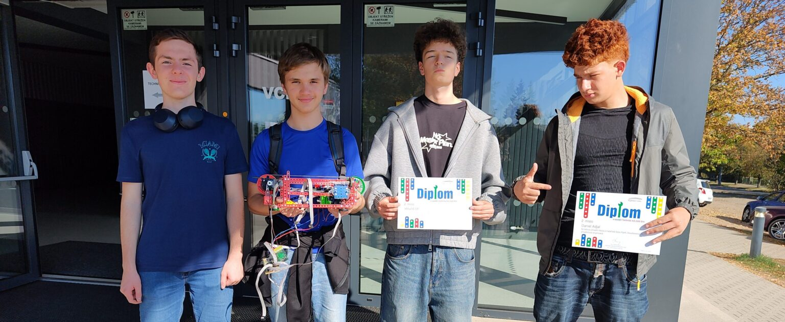
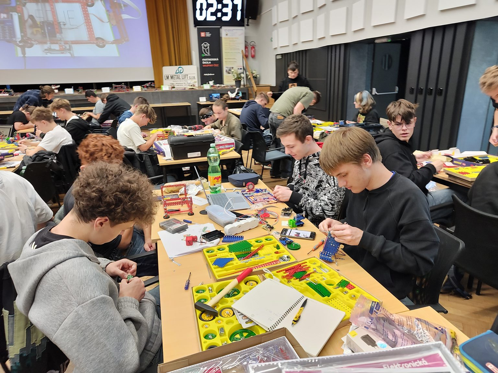
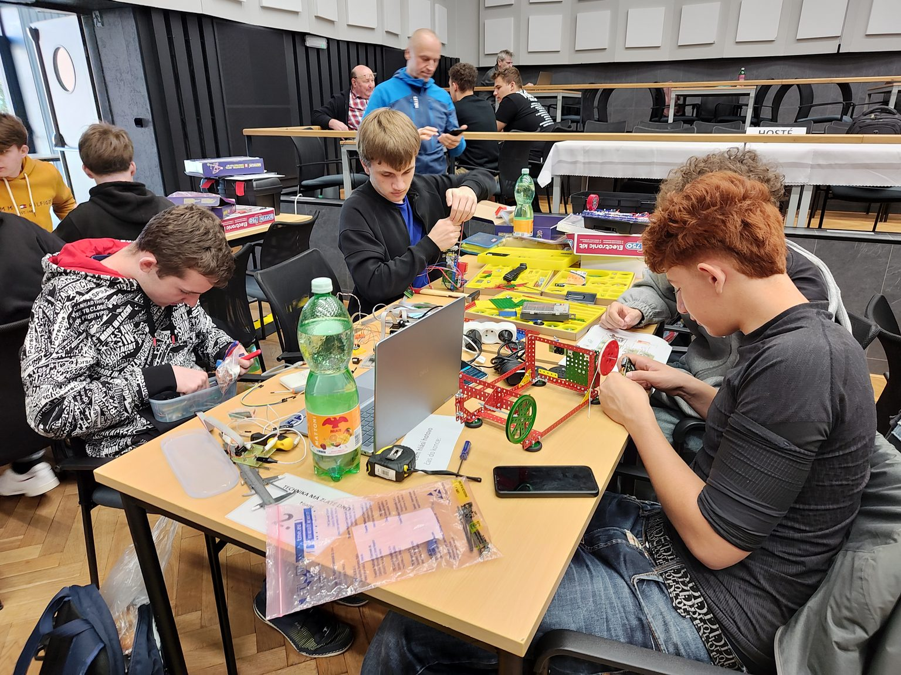
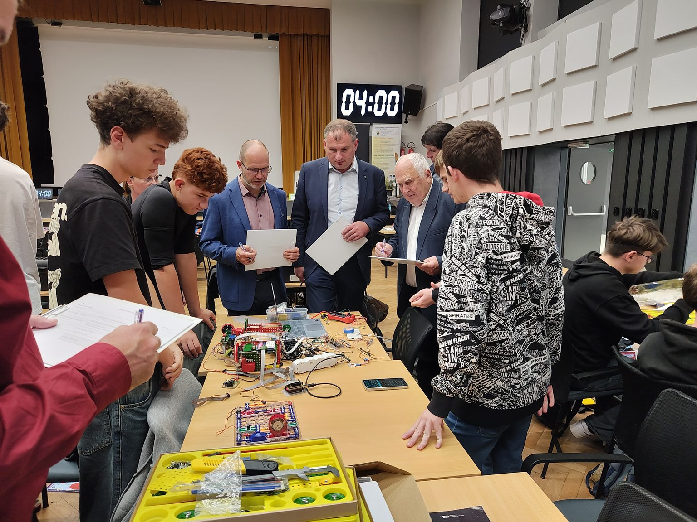
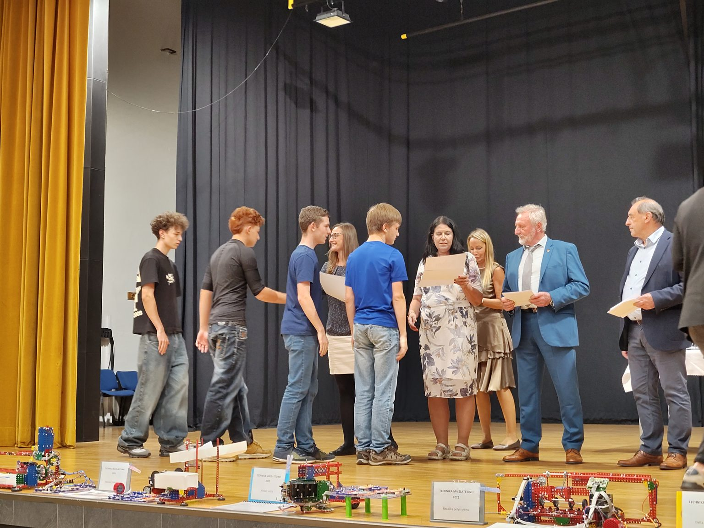

Technika má zlaté dno 2026, SOUE Plzeň
Technika má zlaté dno
- 2. místo mezi gymnázii
Týmová soutěž Plzeňského kraje. Za čtyři hodiny jsme museli postavit funkční X-Y zapisovač ze stavebnic Merkur a Boffin.
- Akce
- Technika má zlaté dno, 11. ročník
- Datum
- 6. 10. 2026
- Tým
- Tomáš Krůta, Mikuláš Vaněček
Soutěž
Technika má zlaté dno je soutěž Plzeňského kraje, ve které se žáci gymnázia spojují se žáky základní školy. Naší partnerskou školou byla Benešova základní škola. Soutěžilo se v aule SOUE Plzeň a na všechno byly čtyři hodiny, které odpočítávaly velké hodiny na stěně.
Zadání
Letošním úkolem byl X-Y zapisovač, tedy stroj, který se pohybuje ve dvou osách a kreslí fixem. Stavěl se ze stavebnic Merkur a Boffin. Podle autora zadání, webu pihrt.com, se zapisovač ovládá tlačítky, má si pamatovat sekvenci pohybů a umět zvedat a spouštět fix, aby šlo kreslit i s přeskoky. Po dokončení kresby se ozve melodie z Boffinu.
Co nás zradilo
Půl hodiny před koncem jsme měli zapisovač celý sestavený a chtěli ho už jen naprogramovat na tlačítka, ale nefungoval. Kolem pobíhali organizátoři a taky nevěděli, co s tím. Hledali jsme chybu a zjistili, že je někde zkrat, protože se extrémně přehříval napájecí kabel. Že jsme dostali vadný driver serva, jsme zjistili až po konci, po prezentaci. Zapisovač v době prezentace nekreslil.
Co jsme vylepšili
Boffin, který zvukově signalizoval dokončení tisku, jsme nahradili vlastním ESP32 s RGB páskem a RGB ringy. Při tisku po nich běhala duha a po dokončení svítily zeleně. K tomu jsme si vyvinuli vlastní aplikaci, která přes wifi přijímala data z ESP a po skončení tisku poslala do telefonu notifikaci, podobně jako to dělají tiskárny Prusa a Bambu. Povedlo se nám také snížit počet šroubků a dílů, aniž bychom ohrozili pevnost konstrukce.
Jak to dopadlo
Podle nás jsme právě díky těmto vylepšením získali od poroty hodně bodů a skončili jsme druzí v kategorii gymnázií, i když nám zapisovač v době prezentace nekreslil.
Galerie









